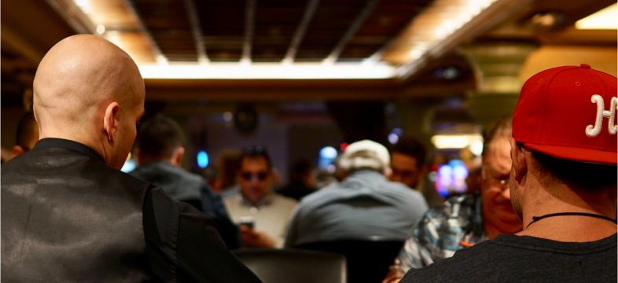

Бренд — это больше, чем логотип или набор цветов, и это также намного больше, чем фотография на обложке. Бренд — это то, как вы чувствуете и понимаете своих клиентов, и он строится на последовательном подходе к каждому взаимодействию с вашим брендом. Хотя это не ограничивается социальными сетями, ваши социальные каналы играют важную роль в создании бренда.
В этой статье мы покажем вам простые способы использования социальных сетей, которые помогут вам создать единый бренд. Это поможет вам при общении со своими потенциальными клиентами и покупателями
Бренд — это больше, чем логотип или набор цветов, и это также намного больше, чем фотография на обложке. Бренд — это то, как вы чувствуете и понимаете своих клиентов, и он строится на последовательном подходе к каждому взаимодействию с вашим брендом. Хотя это не ограничивается социальными сетями, ваши социальные каналы играют

Бренд — это больше, чем логотип или набор цветов, и это также намного больше, чем фотография на обложке. Бренд — это то, как вы чувствуете и понимаете своих клиентов, и он строится на последовательном подходе к каждому взаимодействию
Делимся лайфхаком системы третей. Вы, наверное, слышали о таком правиле в социальных сетях. 1/3 ваших сообщений должна рекламировать ваш продукт или услугу, 1/3 — взаимодействовать с другими, а 1/3 — рассказывать новости и давать советы, относящиеся к вашей аудитории. Другими словами: не просто рекламируйте свои продукты или услуги. Людям не нравится чувствовать, что им что-то продают.
Бренд — это больше, чем логотип или набор цветов, и это также намного больше, чем фотография на обложке. Бренд — это то, как вы чувствуете и понимаете своих клиентов, и он строится на последовательном подходе к каждому взаимодействию с вашим брендом. Хотя это не ограничивается социальными сетями, ваши социальные каналы играют важную роль в создании бренда.
В этой статье мы покажем вам простые способы использования социальных сетей, которые помогут вам создать единый бренд. Это поможет вам при общении со своими потенциальными клиентами и покупателями